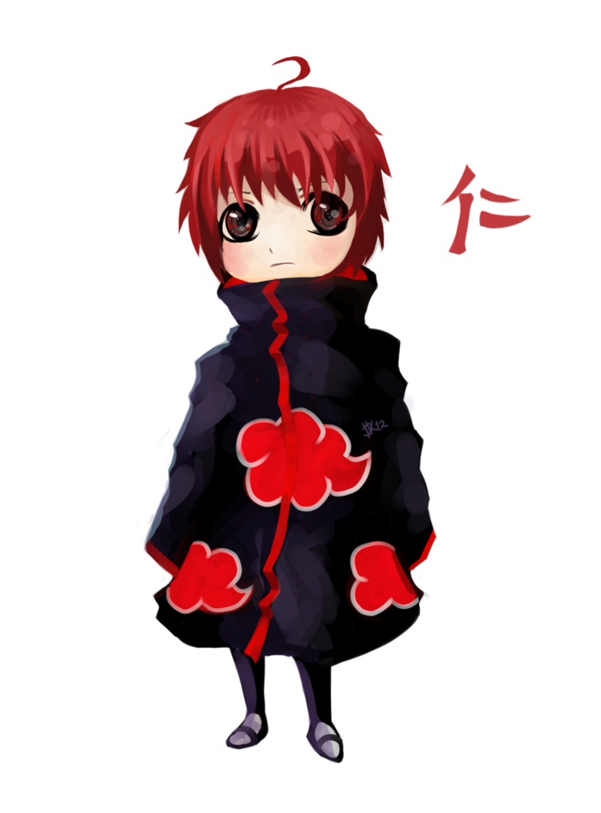

Sasori, conhecido como "Sasori da Areia Vermelha", foi um membro da Akatsuki e um mestre na Arte de Marionetes. Ele transformou seu próprio corpo em uma marionete, tornando-se imortal e mantendo-se sempre jovem.
Sasori nasceu na Vila Oculta da Areia e desde cedo mostrou habilidades excepcionais com marionetes. Ele aprimorou suas habilidades ao longo dos anos, criando marionetes cada vez mais poderosas.
Sasori dominou a Arte de Marionetes, permitindo que ele controlasse várias marionetes com habilidades especiais. Ele implantou armas e mecanismos mortais em suas marionetes, tornando-as letais em batalha.
Sasori criou uma marionete especial, em forma de uma mulher, que possuía seu coração. Ao transferir seu coração para essa marionete, ele se tornou imortal e pôde viver por séculos. Ele se isolou do mundo, vivendo nas sombras como membro da Akatsuki.
© 2023 Akatsuki. Todos os direitos reservados.